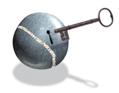

La mise en page HTML
La mise en forme d'un texte autour d'une photo est toujours problèmatique
en HTML, c'est pour cela que que pour certaines éffet on utilise les TABLES.
- Article
-
Tout cela vous le saurez au chapitre suivent.
Pour placer le texte au milieu de la photo il suffit d'ajouter à la balise SRC
align="middle"
puis écrire le texte. Pour ce qui concerne les retraits de texte utiliser les
balises
"<dd> ... </dd>"
Auteur : G.Militello 1999